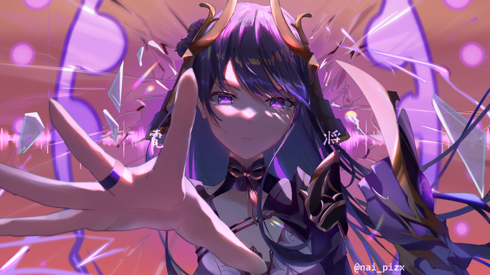

The character that deals 500k damage
Baal is a posthumous character from the game Genshin Impact and the late twin sister of Beelzebul. She is the previous Electro Archon of Inazuma after her death during the great cataclysm. And where she serves as one of the overaching protagonist of Chapter II of the Archon Quests, along Yae Miko.
